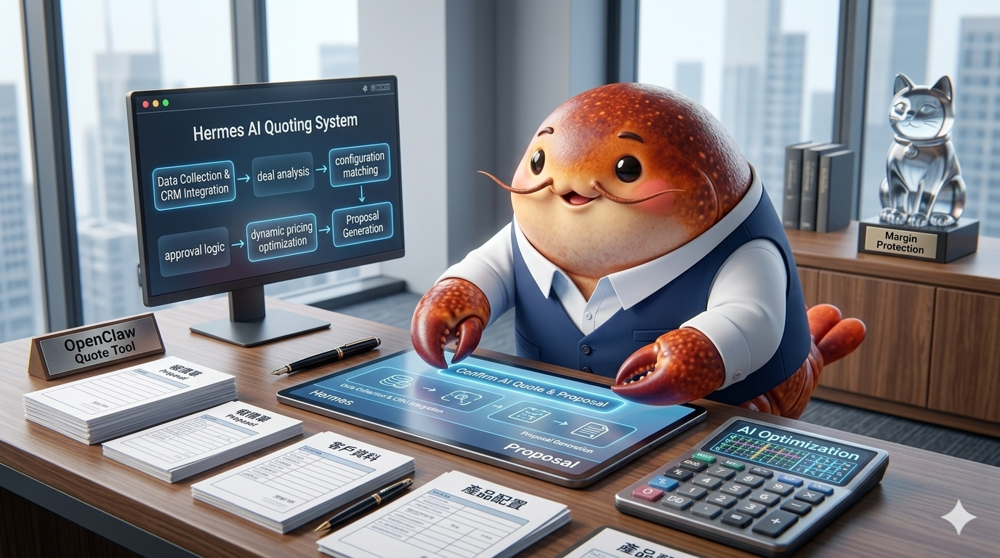

Featured Works
High-impact AI infrastructure designed for scalability and resilience.
Infrastructure & Protocols
Defining the standards for resilient and scalable AI Agent orchestration.
ACP Protocol 🤝 State Layer
Problem: 跨 Session 或跨 Agent 時，任務狀態丟失導致記憶斷層。
Solution: 定義標準化狀態交換協議，將記憶解耦至外部檔案層。
Result: 實現零損失的任務移交，支持異構 Agent 之間的無縫協作。
Model Fallback 🛡️ Resilience
Problem: 單一模型供應商的 429/503 錯誤導致生產環境中斷。
Solution: 實作自動失效切換機制，在毫秒級時間內無縫切換備用模型。
Result: 將系統可用性提升至 99.9%，消除單點失效風險。

Core Flow ⚙️ Standardization
Problem: Agent 開發缺乏標準，導致部署困難且安全邊界模糊。
Solution: 整合 CaMeL 安全邊界與標準化部署模板，定義工業級流水線。
Result: 極大縮短從開發到生產的週期，確保執行環境的絕對安全。
High-Utility Solutions
Turning advanced AI capabilities into specialized tools with measurable impact.

OpenCLI 🚀 Web-to-CLI
Problem: API 限制與動態網頁導致 Agent 無法有效操作 Web。
Solution: 構建介面適配層，將瀏覽器會話轉化為標準化 CLI 指令。
Result: 成功繞過 300+ 網站限制，實現零 API 依賴的自動化。

ProQuote AI 📄 Business Tool
Problem: 自由職業者報價缺乏標準化，導致客戶對價格產生質疑或溝通成本過高。
Solution: 構建結構化報價生成系統，引入「定價策略」模型與專業商業模板。
Result: 將報價準備時間從小時級縮短至秒級，顯著提升交付的權威感與專業度。

Save Your Token 🦀 Efficiency
Problem: LLM Token 成本高昂且冗長輸出導致效率低下。
Solution: 開發極致 Token 壓縮引擎，透過語義清洗與高純度資訊提取降低成本。
Result: 在保持資訊完整度的前提下，減少 60% 以上的 Token 消耗。